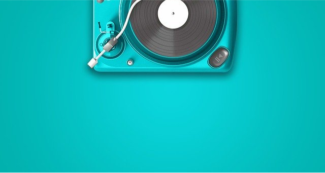
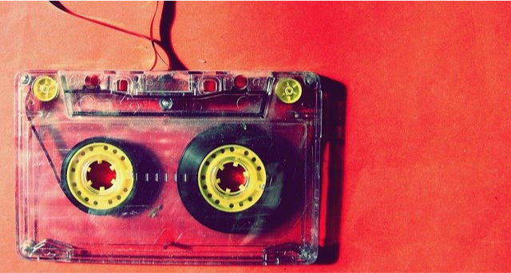
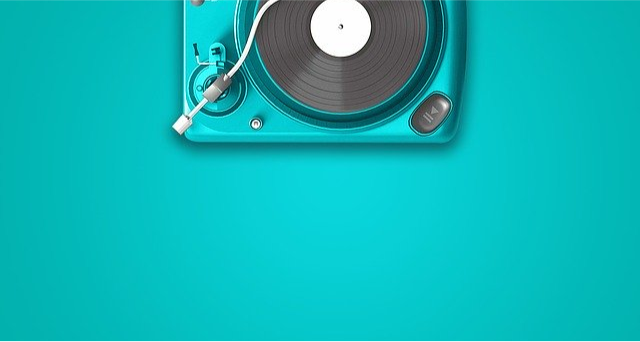
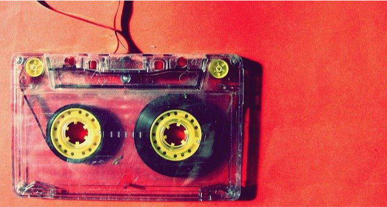
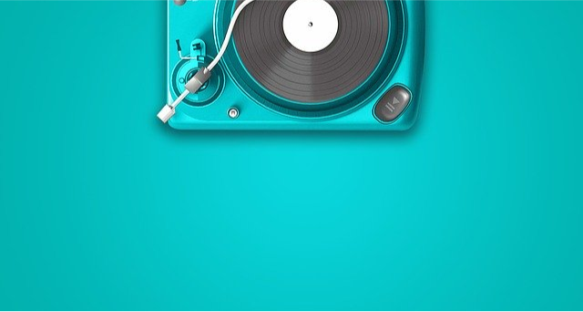
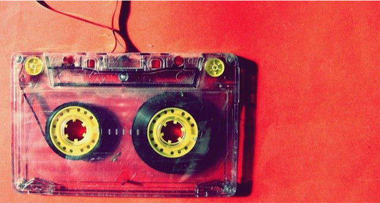

AQUARELA
Uma brincadeira com fotos, cores e efeitos, curta, compartilhe e deixe seu comentário, ficarei feliz pelo feedback
 



Veja mais

Uma brincadeira com fotos, cores e efeitos, curta, compartilhe e deixe seu comentário, ficarei feliz pelo feedback


Veja mais